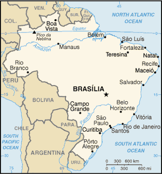
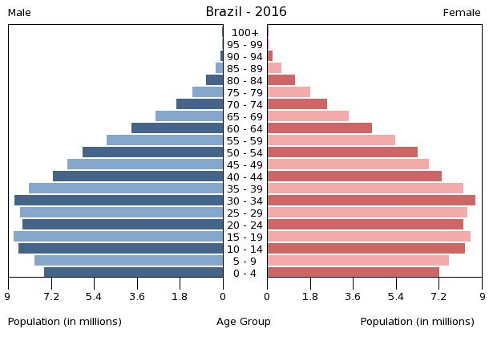

| Fakten | |
|---|---|
| Fläche | 8.515.770 km² |
| Einwohnerzahl | 208.360.000 |
| Bevölkerungsdichte | 24 EW/ km² |
| Amtssprache | Portugiesisch |
| Hauptstadt | Brasília |
| Staatsform | Bundesrepublik |
Brasiliens Landschaft ist von ausgedehnten Regenwäldern des Amazonas-Tieflands im Norden und Hochebenen, Hügeln und Gebirgen im Süden geprägt. Während die landwirtschaftliche Basis des Landes im Süden und in den Savannengebieten des Mittelwestens (Cerrado) liegt, lebt der Großteil der Bevölkerung in der Nähe der Atlantikküste, wo sich auch fast alle Großstädte befinden. Brasilien hat zehn Nachbarstaaten. Es grenzt – mit Ausnahme von Chile und Ecuador – an alle südamerikanischen Staaten (von Nordosten gegen den Uhrzeigersinn gesehen): an Französisch-Guayana mit 730 km, Suriname mit 593 km, Guyana mit 1298 km, Venezuela mit 1819 km, Kolumbien mit 1645 km, Peru mit 2995 km, Bolivien mit 3400 km, Paraguay mit 1290 km, Argentinien mit 1132 km und Uruguay mit 985 km. Die gesamte Grenzlänge beträgt 15.887 km und ist damit nach der Volksrepublik China und Russland die drittlängste Landgrenze der Erde. Der kontinentale Teil Brasiliens liegt in zwei Zeitzonen, einige vorgelagerte Inseln gehören zu einer dritten.
Der höchste Gipfel ist der 2994 m hohe Pico da Neblina , der im gleichnamigen Nationalpark nahe der Grenze zu Venezuela und Guayana liegt. Der zweithöchste Berg ist der Pico 31 de Março (2973 m). Der dritthöchste Berg ist der Pico da Bandeira (2891 m). Berühmter allerdings sind der 710 m hohe Corcovado mit der 30 m hohen Erlöser-Statue wegen seines Blickes über Rio de Janeiro sowie der seiner konischen Form wegen berühmte 395 m hohe Zuckerhut.
Der wichtigste Fluss ist der Amazonas, seine Wasserführung von 209.000 m³/s macht ihn zum weitaus wasserreichsten Fluss der Erde, größer als die sieben nächstkleineren Flüsse der Welt zusammen. Der längste Fließweg seines Flusssystems misst 6448 km; in dieser Hinsicht wird er nur noch vom wesentlich wasserärmeren Nil übertroffen. Die bedeutendsten Nebenflüsse, der Rio Madeira und der Rio Negro, sind bereits mit den größten Strömen anderer Kontinente vergleichbar. Es folgen der Rio Icá und der Rio Tapajós. Iguazú-Wasserfälle am Dreiländereck Argentinien/Brasilien/Paraguay Der Süden Brasiliens gehört bis auf einen schmalen Küstenstreifen zum Einzugsgebiet der Flüsse Uruguay (1790 km) und Paraná (3998 km). Der Paraná ist fast durchgehend aufgestaut; in Itaipú liegt das zweitgrößte Wasserkraftwerk der Welt. Einer seiner Nebenflüsse hat dem Staat Paraguay seinen Namen gegeben; ein anderer ist durch die Iguazú-Wasserfälle bekannt.
Karte von Brasilien
Brasilien ist mit über 200 Millionen Einwohnerinnen und Einwohnern das bevölkerungsreichste Land Südamerikas und der fünftgrößte Staat der Welt. Seine Bevölkerung wuchs seit Mitte des letzten Jahrhunderts von knapp 70 Millionen im Jahre 1950 auf über 200 Millionen im Jahr 2018 an. In Zukunft wird jedoch nur noch ein moderater Zuwachs erwartet.
Zudem ist die brasilianische Bevölkerung ist noch sehr jung. 23,27 % sind unter 15 Jahre alt und nur 7,8 % über 64 (Stand: 2015). Das mittlere Alter beträgt 31,1 Jahre, die mittlere Lebenserwartung liegt bei 74,7 Jahren. Sie lag 2015 bei der männlichen Bevölkerung bei 71,0 Jahren und bei der weiblichen bei 78,4 Jahren.
Bevölkerungspyramide Brasiliens
Mit einem Bruttoinlandsprodukt (BIP) von rd. 1800 Mrd. USD (2016) ist Brasilien die siebtgrößte Volkswirtschaft der Welt.[72] Das Pro-Kopf-Einkommen betrug zur gleichen Zeit ca. 8.700 USD. Die wirtschaftliche Struktur Brasiliens ist gekennzeichnet durch die Kernsektoren Dienstleistungen mit ca. 65 %, Industrie mit 17 % und Agrarwirtschaft mit ca. 6,7 % BIP-Anteil („Agrarbusiness“/Produktion und Verarbeitung von Agrarrohstoffen insgesamt 25 % des BIP).
São Paulo ist das industrielle Zentrum des Landes und trägt ein Drittel zur Gesamtproduktion Brasiliens bei. Die Städte Rio de Janeiro, Belo Horizonte, Pôrto Alegre und Fortaleza sind ebenfalls wichtige Industriestandorte.